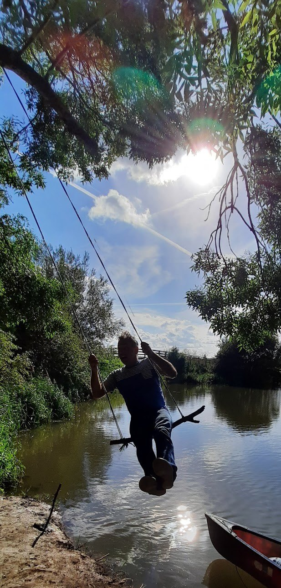

About
Craig Taylor
I work under the name C. M. Taylor because another writer got to the name Craig Taylor first.

Currently there are six published novels out there I’ll admit to having written – two of which have been optioned for the screen.
In 2024, worn out by our hyperactive visual culture – and despite having no skills or experience – I started making super-slow, zero-budget experimental short films, guided by a single slogan: the slow and the spurious, not the fast and the furious. So far they’ve won Best Experimental Film at fourteen international festivals.
I co-wrote the horror film Writers Retreat, set at an isolated creative-writing retreat in Essex, and have been paid cold hard cash to write other scripts for film and TV.
In 2015 the British Library installed spyware on my laptop to record the writing of my novel Staying On – an experiment repeated in 2025 with the University of Antwerp, where I’m undertaking a doctorate in literature with Professor Dirk van Hulle.
I love Belgium.
I’m Senior Lecturer at the Oxford International Centre for Publishing, where I run the following courses:
MA Publishing Media
- Editorial Management (PUBL7005)
- Trade Publishing: Shaping & Selling Stories (PUBL7002)
BA Media, Journalism and Publishing
- Developing Content in the Age of Streaming (MJPB6012)
- Writing & Developing Content (MJPB4001)
For many years I wrote editorial reports on fiction for writers, and for many years more I was a structural editor of fiction for publishers – many hundreds of writers, many tens of published novels. I’ve ghostwritten crime fiction for an internationally best-selling writer, and non-fiction for an international criminal.
Bio-wise: I run every day, go canoeing and am an art-history nut. I’ve got parents, feelings and kids.
I write a Substack on film, literature and creativity – As Best I Can – borrowed from the personal motto of the fifteenth-century Flemish master Jan van Eyck.
Praise
My fiction’s been reviewed widely in the UK national press.
“You’ll have a hoot.”The Guardian
“A very accomplished and witty prose stylist.”The Mirror
“Inspires laughter and loathing in equal measure.”Independent on Sunday
“Brilliant.”The Sun
Selected writing, interviews & events
Interviews & articles
13
- The Nightbuilder – a short story for the Inventive podcast
- Sobriety and the Solace of Music – The Social
- How to write a villain – Jericho Writers
- How to create a great inciting incident – Jericho Writers
- How to write a great scene – Jericho Writers
- Writing quotes from writers – Jericho Writers
- Planning a novel – Jericho Writers 2018
- On the Keystroke Project – British Library 2018
- Keylogging data – British Library 2018
- How to Wallpaper a Dungeon – The Writing Platform 2018
- Staying On launch interview – Retreat West 2018
- Interview – Woven Tale Press 2017
- On the transformational arc – Retreat West 2016
Appearances & events
7
- The Brave New World of Publishing, with Angus Phillips 2024
- Staying On launch – Jam Factory, Oxford 2018
- How to Get Published Day – Jericho Writers, London 2018
- Short Stories Aloud – Blackwell’s, Oxford 2018
- Workshops – York Festival of Writing 2018
- The Screenwriting Retreat – Retreat West 2018
- Character is Destiny – Manchester Writing School 2018